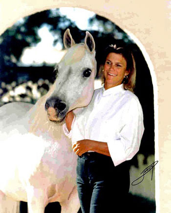

Back in 1976 the biggest news in the Arabian world was that a 25 year old girl had just paid a record price for an Arabian mare at the Nichols Arabian Sale. This was no ordinary mare, and her new owner was deeply committed to being a serious breeder, having begun her study of Arabian bloodlines at age 9.
The mare was 1972 U.S. National Champion Mare *Elkana++, who had been imported by film director Mike Nichols from Poland, and the girl was veteran breeder Aude Espourteille. "*Elkana++ was my best friend in life, " recalls Aude. "She was that once in a lifetime gift to be treasured forever. She was the love of my life, and it was an honor to care for her while she visited this earth. We lived together for most of her life in a little corner of paradise, a mystical place where dreams come true?a place I named Deor Farms so long ago."
 Aude selected carefully the best possible mates for *Elkana++ and the result has been worldwide influence for her descendants. "What I want most is to produce a horse that will take your breath away and be an extraordinary athlete." Aude's record at producing horses who inspire dreams is exceptional. *Elkana++ produced five champions, four of them National winners in halter, and four National winner producers. She nicked very well with stallions of the Witraz sire line.
*Elkana++'s son Ricard (by the *Bask++ son Negatraz) was a U.S. Top Ten Stallion. Another son, Cartier by *Bask++, was a U.S. Top Ten Stallion AOTH with Aude on the lead and has sired National Champions in halter, English sidesaddle, and hunt pleasure and National winners in English pleasure and native costume. He is also an excellent broodmare sire, and many of Aude's current champions trace to him on the dam side of their pedigrees. *Elkana's unshown daughter Ultima, a full sister to Cartier, is the dam of National winners in halter and performance and of a National winner producer. Another *Bask++/*Elkana++ daughter, A Love Song, produced an extraordinary four National winners, all of whom have produced National winners: Canadian Reserve National Champion English Pleasure Amoree (a sire of National Champions in halter and dressage), Canadian Reserve National Champion Park To Love Again (dam of Top Flyer, a National winner in hunt pleasure), multi-National Champion English Pleasure A Temptation (a sire of National Champions in both saddleseat performance and sport horse competition), and multi-National Champion Park Allience+// (sire of multiple National Champions in disciplines from saddleseat to dressage). *Elkana++'s daughter Elegant Crystal (by *Aladdinn) is the dam of four champions including U.S. National Champion Mare and English Pleasure Junior Horse Ericca (whose seven champion offspring to date include a multi-National winner in English pleasure and park and two National winners in halter).
Aude has retained *Elkana++'s final son, U.S. Top Ten Stallion AOTH Eminant, by the Negatraz grandson Aicying. "His best traits are his attitude, type and motion, " Aude explains. "He has a lovely short back, great tail carriage, and a very typey face. He consistently passes on to his get smooth bodies, good motion and upright necks." Aude says her favourite Eminant daughter is the stunning bay multi-regional halter champion Estee Lauder, who is tall and elegant, with an extreme face. Eminant stands at Deor Farms where he is following in the tradition of his maternal siblings with get like U.S. Top Ten Reining Futurity Emigrant, the exquisite multi-halter champion SA Cavalli, and of course multi-regional halter champion and National winner producer Estee Lauder.
At the 2011 U.S. Nationals, the *Elkana++ factor was very apparent in many of the winners in a variety of disciplines. 12 different purebred winners traced to *Elkana++, among them were Top Ten winners in halter, western pleasure, hunt pleasure and country pleasure and U.S. Reserve National Champion English Pleasure Maturity AOTR Baske Allience, Reserve National Champion Country Pleasure Select ATR Baske Alarm, Reserve National Champion Country Pleasure Futurity Timpani SMP, and Reserve National Champion Pleasure Driving Exxpectations, These winners traced to *Elkana++ through her sons Cartier and Eminant and daughter A Love Song.
Sometimes a breeder must act on gut instinct, a feeling that can't be explained logically. *Elkana++ set an exceptionally high standard but the next great horse in Aude's life came to her completely unexpectedly. On a visit to Petroglyph Arabians to look at fillies, she discovered the yearling colt A Jakarta, who kept nickering to her and demanded she notice him (although she says everyone else was ignoring him that day). He captured her heart and imagination. Aude, the pedigree person, didn't even bother to ask how he was bred. All she knew was that he had chosen her and she was being called to care for him.
A Jakarta turned out to be royally bred, however. His sire was the Brazilian import *Jullyen El Jamaal, who carries two lines to U.S. National Champion Stallion Ali Jamaal and a line to the exquisite international champion *El Shaklan, whose beauty has inspired breeders worldwide. *Jullyen El Jamaal also has a line to the unforgettable U.S. Reserve National Champion Bey Shah+, for many years the breed's leading sire of National winners in halter, with get including U.S. National Champion Stallion Fame VF+ and four U.S. National Champion Mares, all of whom produced National winners. *Jullyen El Jamaal has sired 41 National winners, among them National Champions in halter, western pleasure, hunt pleasure, and western sidesaddle. At the 2011 U.S. Nationals, *Jullyen El Jamaal sired nine different winners in hunt pleasure, western pleasure and reining, five of them National Champions.
A Jakarta's dam Gai Schara produced 4 champions. She is a daughter of Bey Shah+, whose daughters have crossed very successfully with *Jullyen El Jamaal, producing such National halter winners as Shahnelle El Jullyen and Bey Jullyen (also a National winner sire), National Champions Jullyani, Gai El Jullyen (also a champion in ridden competition in Australia), and National Champion Hunt Pleasure Kijan El Jullyen V. Gai Schara is a full sister to halter champion Gai Beisha, who was exported to England's Halsdon Stud. Their dam Gai Chardonnay was a full sister to U.S. National Champion Stallion and Pleasure Driving Gai Parada+++/, a sire of National Champions in halter and multiple performance disciplines.
Aude's well developed eye chose A Jakarta not knowing his heritage was such that he would live up to her ideal. He quickly proved himself with wins on the National level each time he competed, including U.S. Top Ten Sweepstakes and Futurity Colt, U.S. Top Ten Stallion AOTH (with Aude) and Canadian Reserve National Champion Futurity Colt. This year he was named Region 3 Champion Stallion and then went to the inaugural Scottsdale Breeders Finals where he was named Bronze Champion Stallion.
A Jakarta has proven himself as a show horse and he has more than met Aude's expectations as a sire as well, nicking well with a variety of mares and producing offspring as stunningly beautiful as himself. "A Jakarta has extreme exotic type with attitude, he brings elegance and long legs, a great upright neck and beautiful eyes." A Jakarta has sired 50% champions from his get old enough to compete in 2011-a remarkable percentage for a young sire.
A Jakarta has sired regional halter winners out of daughters of Bey Shah+, U.S. National Champion Stallion *Marsianin, multi-Top Ten Stallion Magic Dream, and multi-U.S. National Champion Stallion Magnum Psyche, He has also sired winners out of Gainey bred mares whose foals are thus linebred to Ferzon and Azraff. Five of his regional winners are out of mares who trace to the *Elkana++ son Cartier, and Aude's personal favorite among his get is 2011 Scottsdale unanimous International Junior Champion Filly and U.S. Top Ten Two Year Old Filly A-Malaysia, whose dam Estee Lauder is by the *Elkana++ son Eminant. A-Malaysia is owned by the Al Shahania Stud of Qatar. A-Jakarta is now a popular international sire, with get exported to Kuwait, China and South Africa. His semen is also now approved for export to the European Union.
Aude offers advice to breeders aspiring to success that is based on her long experience with Arabians. "Learn what quality really is. Figure out what you like best in a horse and what is most important to you. Don't follow trends. Be true to your ideals, and most of all, be patient. Horse breeding is a long term commitment. If you're not willing to make such a commitment, don't get into it. Just buy an occasional good horse and enjoy it. Breeding is not for the faint of heart. I measure my own accomplishments as a breeder by the successes of horses I have bred that have gone on to contribute to other breeding programs."